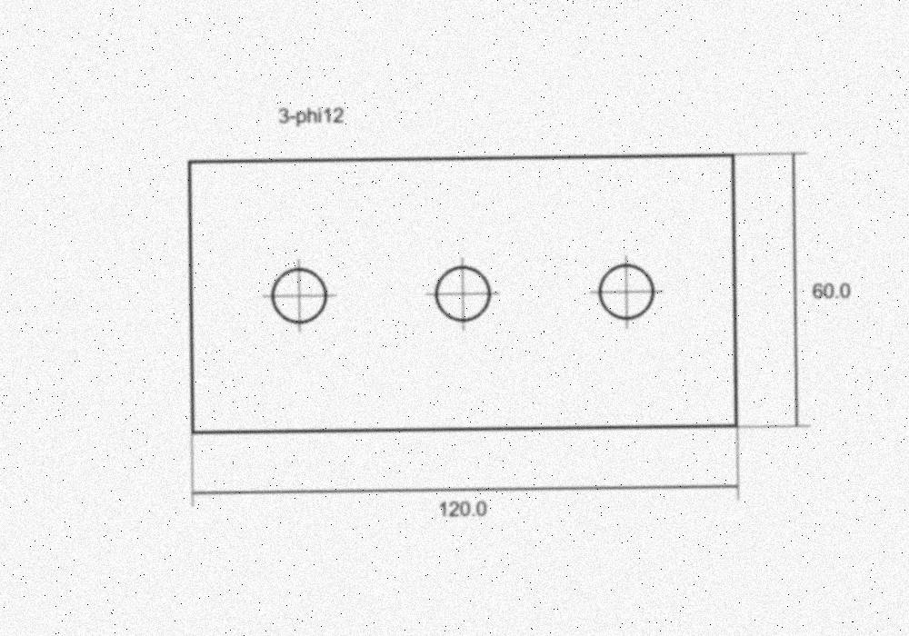
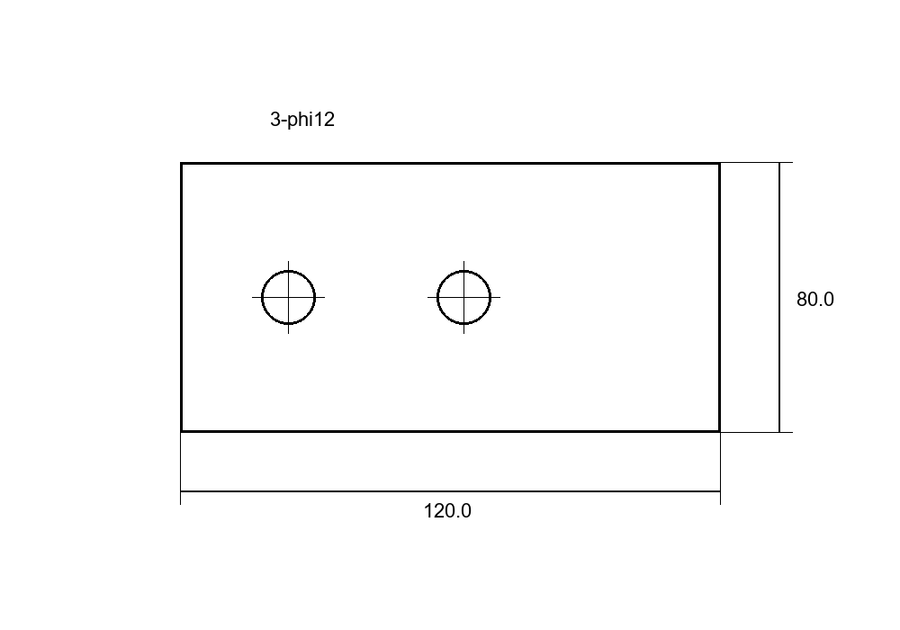
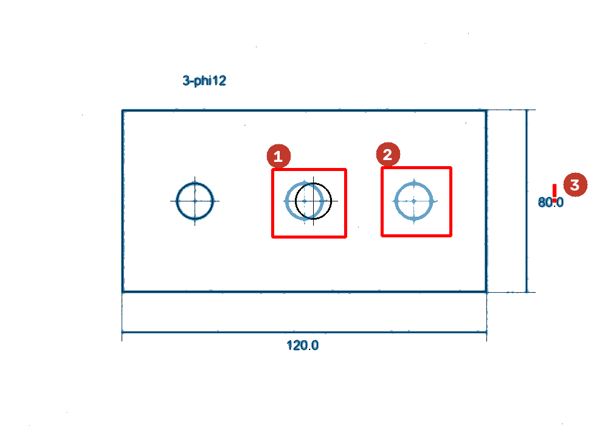
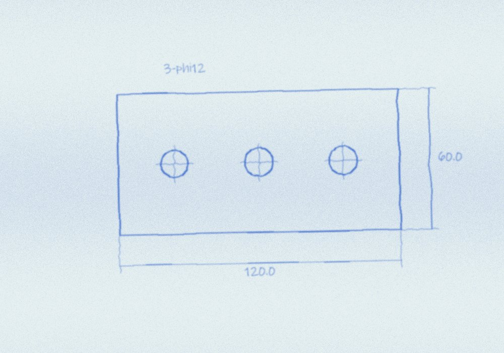
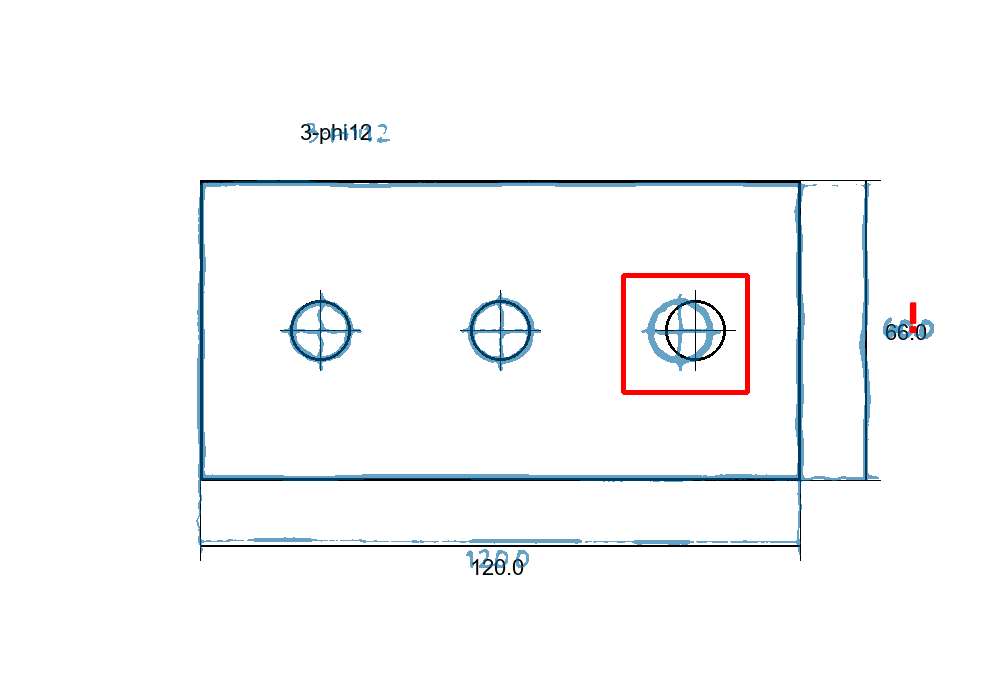

青焼き・手描き・コピーの図面の写真やスキャンを送ると、CAD（DXF/DWG・PDF）に描き直してお返しします（手描きは仕上がりに差が出る場合があります）。
CADにした後、元の図面と違う所に赤い印を付け、見直しの助けになることを目指しています（開発中・手描きは検証中）。
価格の目安：A3 1枚 12,000円前後〜（税込・予定）／まとめてのご依頼は割引を予定（内容は未定）
無料お試し（先着3社）：お手持ちの図面1枚を実際にCAD化し、確認表まで付けてお返しします。
対象：紙図面・青焼き・手描き図面をお持ちの町工場、設備保全、設計事務所。
| 今できること（見本で試験済み） | 検証中のこと |
|---|---|
| 印刷図面の見本（傾き0.7度）で、線の欠落・穴のずれ・寸法の数字の違いを位置つきで照合。手描き風・青焼き風の見本（縮尺0.93倍・傾き1.2度）で、穴のずれ・寸法の数字の違いを照合 | 本物の手描き・青焼きの図面・斜めの数字・紙の波打ちでの照合 |
写し間違いの確認表は開発中の機能で、精度は保証しません。機械的に照合したうえで、人も確認します。
黒＝CAD図面／青の点線＝元の図面（重ね合わせ）／赤丸＝要確認箇所（見本）
| No. | 種別 | 位置 | 状態 |
|---|---|---|---|
| 1 | 線の欠落 | 下辺 X120〜170（例） | 人が確認 |
| 2 | 穴のずれ | 右下の穴 約0.8mm（例） | 人が確認 |
| 3 | 寸法の数字 | 右辺「120」→「128」（例） | 人が確認 |
上は見本のイメージで、実際の図面・数値ではありません。
当方で作った見本の図面（120×60の板・穴3つ）を紙をスキャンしたように傾け・かすれさせた物と、同じ図面にわざと間違いを3つ入れたCAD図面（プログラムで作成。スキャンからの描き直しではありません）を用意し、照合しました。照合のプログラムは実際に動かした物で、③は出力に番号を付けた物です。



| No. | 見つかった違い | 入れた間違い |
|---|---|---|
| 1 | 真ん中の穴の位置が違う | 3mm右へずらした |
| 2 | 元の図面にある穴がCADにない | 右の穴を描き忘れた |
| 3 | 寸法の数字：元の図面は「60.0」、CADは「80.0」（画像はCAD側の数字を表示） | 数字を書き換えた |
入れた3つは見つかりました。間違いのないCAD図面と照合したときは、赤の印は0でした。ただしこれは当方で作った印刷文字の見本1枚の結果です。
同じ板を、線のゆれ・手書き風の字体の数字・青焼きの色むらでプログラムで描いた見本を作り、さらに縮尺を0.93倍・1.2度の傾きにしてスキャンした想定にしました（これも当方で作った見本で、本物の手描き図面ではありません）。


| 見つかった違い | 入れた間違い |
|---|---|
| 右の穴の位置が違う（赤の四角） | 3mm右へずらした |
| 寸法の数字：元の図面は手書きの「60.0」、CADは「66.0」（赤の「!」） | 数字を書き換えた |
入れた2つは見つかり、間違いのないCAD図面との照合では赤の印は0でした。分かった限界：手描きの線はゆれるため、照合の許容幅を約1.2mmに広げています。これより小さいずれは見分けられません（印刷の図面より粗くなります）。許容幅をもっと狭くすると、正しい図面でも線のゆれを違いとして拾いました（この見本では寸法線に1か所）。手書きの数字は読み違えることがあり、読めない数字は人が確かめます。どちらも見本の結果で、お客様の実際の図面での精度は、無料お試しで確かめます。
| サイズ | 予定価格（税込） |
|---|---|
| A3 | 12,000円前後〜 |
| A1 | 要見積り |
総額の例（税込・割引前）：A3を30枚なら36万円前後〜。急ぎの数枚だけ、からでも頼めます。
まとめてのご依頼（例：30枚・100枚以上）は、枚数に応じた割引を予定しています（率・条件は未定）。概算は事前登録の方に受付開始時にお知らせします。図面の複雑さで変わります。納期の目安は、サービス内容の確定後にご案内します。販売開始時に特定商取引法の表記を掲載します。
無料お試しは先着3社・1社1枚（A3以下）の予定です。条件の詳細は受付開始時に案内します。納期も受付開始時に案内します。
下のボタンでメールが開きます。枚数と大きさなどを選んで書くだけ（約1分）で、そのまま送ってください。
メールが開かないときは、info@cocreturn.com あてに、件名「図面デジタル化 事前登録」で次の内容を送ってください。
受付の確認は2営業日以内を目安にメールでご連絡します（混雑時は遅れる場合があります）。登録の段階では図面を添付しないでください。いただいた内容は案内目的のみに使います。詳しくはプライバシーポリシー。